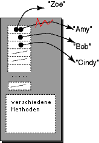

FRAGE 8:

Kapazität: 20 size: 0 Kapazität: 20 size: 3
Vector-Elemente
Sie haben gerade gesehen, dass die addElement() Methode
Elemente am Ende eines Vector-Objekts hinzufügt.
Manchmal möchten Sie Daten für einen bestimmten Index setzen.
setElementAt( objektReferenz, index )
Der index sollte innerhalb von 0 und size()-1 liegen.
Die Daten, die vorher an der Stelle index waren, werden durch objektReferenz ersetzt.
Um auf ein Objekt über einen bestimmten Index zuzugreifen, verwenden Sie:
elementAt( index )
Der index sollte innerhalb von 0 und size()-1 sein.
Hier ist das Beispielprogramm:
|  |
import java.util.* ;
class VectorBsp
{
public static void main ( String[] args)
{
Vector namen = new Vector( 20, 5 );
namen.addElement("Amy");
namen.addElement("Bob");
namen.addElement("Cindy");
System.out.println("slot 0: "
+ namen.elementAt(0) );
System.out.println("Slot 1: "
+ namen.elementAt(1) + "\n");
namen.setElementAt( "Zoe", 0 );
System.out.println("Slot 0: "
+ namen.elementAt(0) );
System.out.println("Slot 1: "
+ namen.elementAt(1) );
}
}
|